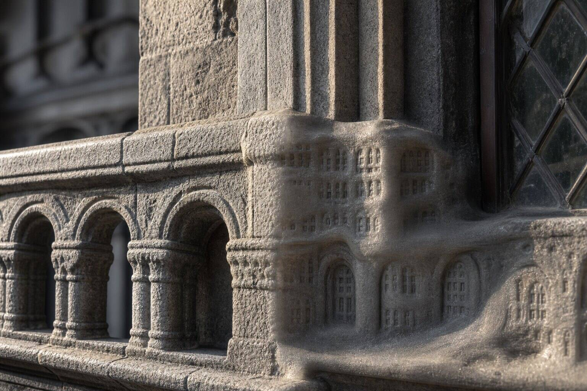
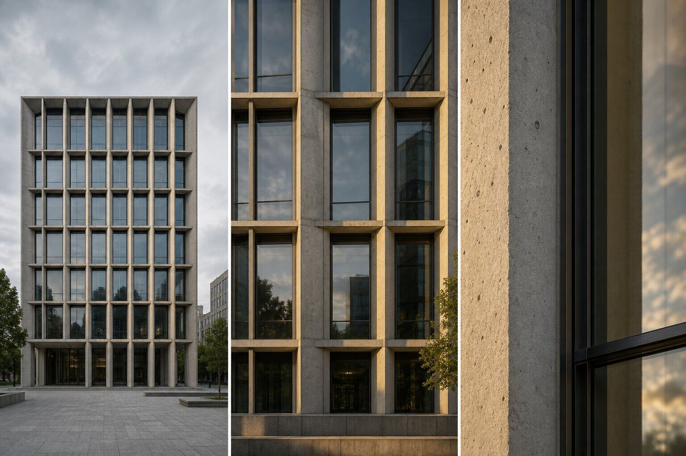

How should architects review a 4K ComfyUI render?
Check it at fit view for composition and design drift, at its intended display or print size for visual quality, and at 200 percent for seams, halos and invented detail. Compare each scale with the source render. Approval requires three passes because enlarging the file changes what defects become visible.
A facade looks calm on a laptop. At 100 percent, three balcony rails become soft noodles. At 200 percent, the stone has acquired tiny windows. The file is 4K. The building is less certain than it was at 2K.
This week's community question asks how to use Flux and ComfyUI for final polish on a 4K architectural render. The recurring mistake is to treat 4K as a quality badge. It is only a pixel count. The route used to reach it may preserve the source, resample it or invent another layer of detail.
Why does 4K need more than one inspection scale?
Different defects appear at different viewing conditions. Fit view makes camera drift, silhouette changes and broken value structure obvious. Delivery size tells you whether the image feels resolved in the format the audience will see. A close inspection exposes seams, ringing, repeated texture and small objects that changed identity.
Zooming in first is surprisingly unhelpful. It turns the review into a scavenger hunt for bad pixels while a moved opening sits in plain sight at fit view. Staying zoomed out is worse. Soft balustrades and invented signage become tomorrow's print surprise.
The review order matters: whole building, delivered image, technical surface. It mirrors our ComfyUI change-budget method, which protects design facts before admiring the finish.
What exactly made the image larger?
Ask before judging. Official ComfyUI examples show at least two materially different routes. The upscale-model example uses an UpscaleModelLoader with ImageUpscaleWithModel in pixel space. The official two-pass example enlarges an image, then sends it through img2img for another generative pass.
Those routes do not deserve the same presumption. A pixel upscaler may sharpen or synthesize local texture while broadly retaining composition. An img2img pass deliberately generates again, so its denoise setting, prompt and conditioning become part of the design-risk calculation.
Record the source dimensions, output dimensions, scale factor, node path, upscaler model, sampler, seed and denoise. If tiled encoding or decoding is used, record the tile settings too. “Exported at 4K” conceals the only facts that explain why a mullion multiplied.
| Review scale | Primary question | Typical failure |
|---|---|---|
| Fit view | Is it still the same design and image? | Moved edges, altered crop, new focal point |
| Delivery size | Does it read correctly where it will appear? | Oversharpening, weak hierarchy, noisy materials |
| 200 percent | Did the process damage or invent detail? | Halos, seams, false joints, broken text |
What should fit view protect?
Place source and candidate at the same bounds. Confirm the aspect ratio before comparing. Check the building silhouette, horizon, major openings, floor lines, access points and the location of the visual emphasis. Toggle between images or use a difference view after registration.
Do not excuse a shifted parapet because the planting improved. Fit view is the stage where the building gets veto power. Our geometry-hallucination checklist covers the recurring offenders: openings, roof edges, stairs, railings and repeated bays.
Also inspect broad light relationships. A second generative pass can turn a restrained facade into a theatrical gradient or brighten glazing until the exterior reads as night. That may be an intentional art-direction choice. If it was not requested, it is drift.
What counts as delivery size?
It is the image at the size and density the audience will actually receive. For a website, review the rendered CSS size on a representative display, not a 3840-pixel file squeezed into an arbitrary viewer. For a board or page, make a proof at the intended physical dimensions and output method.
This pass judges hierarchy, material readability, entourage and perceived sharpness. It is where a technically crisp image can still feel brittle. Aggressive upscaling may give every leaf, stone joint and chair equal emphasis, which is the visual equivalent of a meeting where everyone brought a microphone.
Compare against the source at the same delivery size. The larger candidate should earn its extra pixels through cleaner edges and useful texture. If it merely makes generated noise more articulate, the smaller file may be the better deliverable.
Why inspect at 200 percent?
Two hundred percent is a diagnostic view, not the final aesthetic standard. It makes one source pixel or output pixel large enough to reveal patterns that ordinary interpolation can disguise: tile seams, edge ringing, checker texture, doubled frames, clipped masks and repeated detail.
Move through a fixed set of crops rather than wandering. Check one skyline edge, one repeated facade bay, glazing, a material transition, signage, a person and an area of smooth gradient. Add railings or fine planting when they matter to the image.
Our tile-seam review explains how to inspect likely boundaries when a high-resolution graph splits the image. The three-scale method is broader: even a file without seams can fail because the generative pass redrew the architecture.

How should differences be classified?
Mark each difference as intended, tolerable or blocking. Intended changes should match the brief: richer foliage, a corrected reflection, better material texture. Tolerable differences are invisible at delivery size and do not affect a specified element. Blocking differences change the design, message or technical integrity of the file.

Use a crop sheet with source on the left and candidate on the right. Keep identical coordinates. A separate difference matte can help locate change, but it cannot decide whether the change is sensible. The difference-matte workflow is a detector, not an approving architect.
If only one region fails, repair that region. Do not send the entire 4K frame through another creative pass because six balcony rails misbehaved. Mask the defect, reduce the permitted change or composite the clean source back in.
What should the approval record contain?
Save the untouched source, final candidate, workflow JSON and a small contact sheet showing the three review scales. Add output dimensions, intended use, review display or proof size, upscaling route and accepted exceptions.
Name the reviewer and date. If the file is revised, issue a new approval rather than letting a filename inherit the previous verdict. A changed seed, upscaler or denoise value creates a new image even when the prompt stays put.
The record can be compact. Its job is to make “approved at 4K” mean something more than “looked fine in the browser.”
Our take: resolution is not absolution
ComfyUI makes high-resolution workflows wonderfully explicit. Nodes show where the image was scaled, decoded and generated again. Use that clarity in review.
Approve the building from across the room, the image from its seat, and the pixels under a lamp. A 4K label gets no vote.